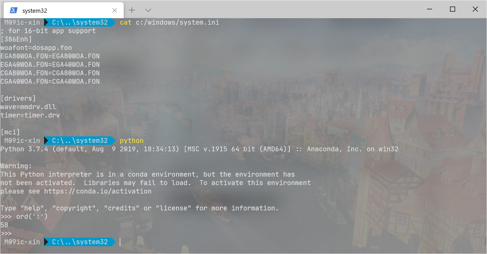
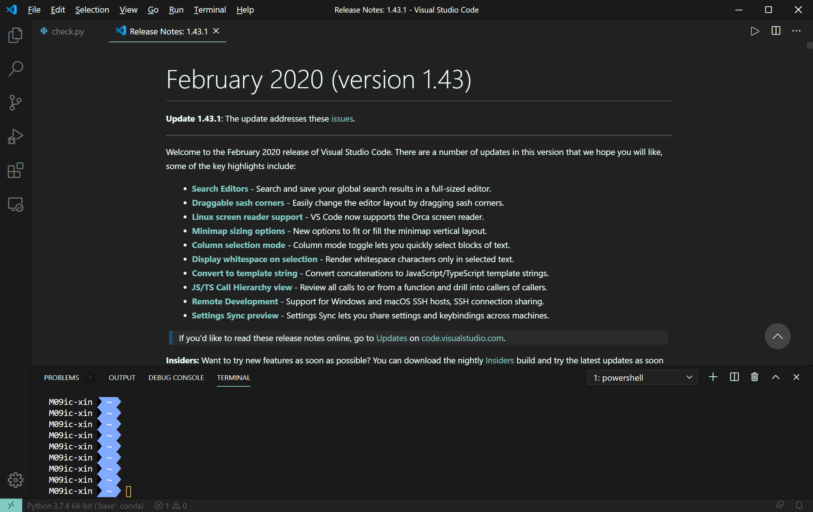
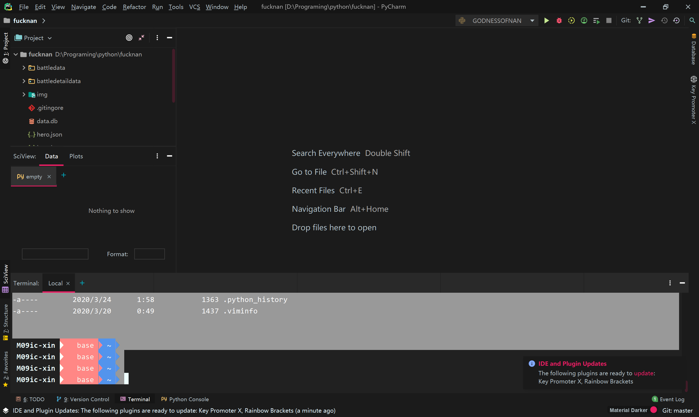
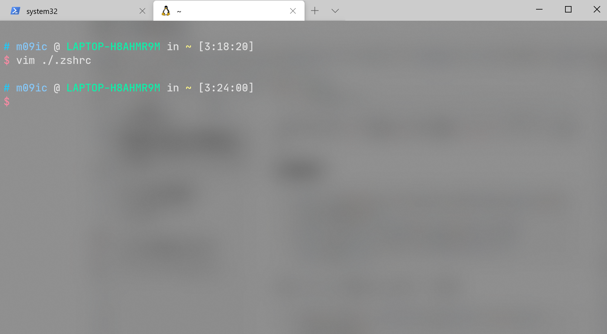
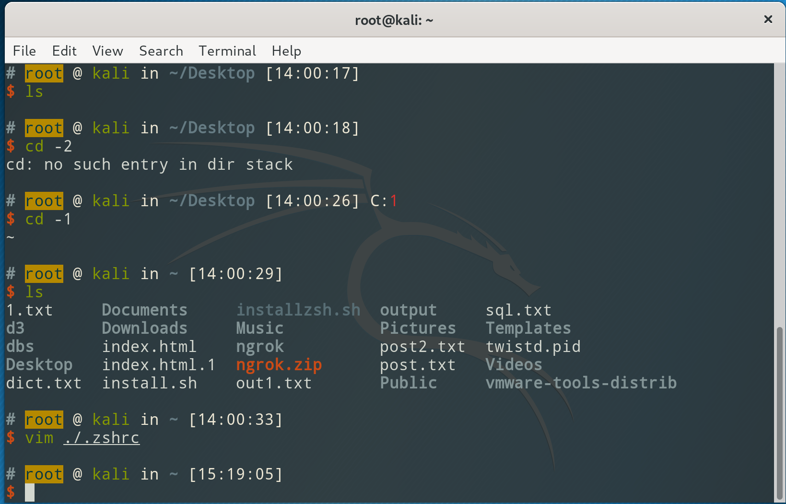

前言
从学计算机开始,每天都在和命令行打交道.从一开始啥都不懂,到处复制别人命令,到现在老是喜欢整写花里胡哨的或者提高效率的东西.
加上前两天看到了命令行的艺术这篇文章,正好整理一下这两年折腾过的命令行.
实用的命令行技巧
因为我自己实在是没有探索出什么实用的技巧,就总结一下命令行的艺术这篇文章中一些最常用的技巧.
sudo !!# 可以给上条命令加上sudo,!!就是代表上一条命令.- ctrl + r 可以搜索历史记录,并自动键入.当然使用historty|grep something 然后!1150,这样也是同样的效果,不然显然前者更好用.在zsh中更更好用的插件zsh-autosuggestions.
- 为了便于编辑长命令，在设置你的默认编辑器后（例如
export EDITOR=vim），ctrl-x ctrl-e 会打开一个编辑器来编辑当前输入的命令。 - 回到前一个工作路径：
cd -,在zsh中,cd -然后按tab还可以选择历史工作路径. - 使用
netstat -lntp或ss -plat检查哪些进程在监听端口. lsof来查看开启的套接字和文件- 使用tmux来分屏以及挂起.
- 用好awd,sed,grep可以免去你写python脚本的时间.
- 用好vim,可以免去你从服务器中复制来复制去的时间.
好了,我在这篇文章中学到的常用的实用技巧就这么些.但是我整花里胡哨的可强了.
花里胡哨的命令行
通用配置
字体: https://www.jetbrains.com/lp/mono/
jetbrains家前段时间出品的字体,看着确实挺舒服的.
windows
先放张成品图

去年微软更新了他那个年龄比我还大,丑不拉几的终端.开源了一个新的终端工具—-windows terminal.
可以把CMD,POWERSHELL,WSL等等各种命令行都聚合起来,用一个配置文件把他们都变得花里胡哨的.
当然,这个工具现在还在早期测试版本,难免有缺陷与bug.
来讲讲它的优点吧.
- 支持毛玻璃特效以及背景图片.
- 它将各种命令行聚合起来,快速打开与切换
- 完美支持oh-my-posh(一个类似linux下的oh-my-zsh的工具).
安装
windows terminal 在windows stores下搜索安装即可.当然也可以从github自己编译安装.
因为它不会把自己添加到右键菜单,而这个功能还是挺常用的,所以手动改下注册表,把它放进去.
1 | mkdir "%USERPROFILE%\AppData\Local\terminal" |
下载图标,当然可以不要图标,就是丑了点.
1 | [HKEY_CLASSES_ROOT\Directory\Background\shell\wt] |
这个方法是在知乎的老哥那学来的.
安装oh-my-posh
Install-Module posh-git -Scope CurrentUser
安装oh-my-posh:
Install-Module oh-my-posh -Scope CurrentUser
导入:
Import-Module oh-my-posh
设置主题,我用的是agnoster:
Set-Theme agnoster
为了让powershell每次启动都能自动加载ohmyposh,得写入配置文件.
$profile查看配置文件
然后在配置文件中添加:
1 | $profile |
上面配置好了,在vscode与pycharm之类的地方同样可以使用.
这是vscode中的

pycharm中的:

顺带一提,jetbrains家的ide与vscode都推荐安装Material Theme UI这个主题.
pycharm下似乎有些bug,不过酷炫就好了,管这么多干什么?
Linux
先上效果图.


分别是kali中的与wt下的wsl中的.
wsl与linux下安装oh-my-zsh大致相同,只是字体需要额外设置,见下文.
安装zsh
apt-get install zsh
安装oh-my-zsh
如果没有安装git,需要先安装git.
1 | sh -c "$(curl -fsSL https://raw.githubusercontent.com/ohmyzsh/ohmyzsh/master/tools/install.sh)" |
如果有多个用户,建议在/etc/passwd下面把每个用户的shell都改成/usr/bin/zsh
修改主题
在~/.zshrc中找到ZSH_THEME,引号中的内容改成指定主题.
推荐使用ys或agnoster
安装字体
1 | git clone https://github.com/powerline/fonts.git |
这样安装字体在wsl不适用,wsl依旧需要在windoes terminal里设置字体.
安装插件
1 | git clone https://github.com/zsh-users/zsh-syntax-highlighting.git |
修改~/.zshrc,找到plugins那行，修改成：
1 | plugins=(git z zsh-autosuggestions zsh-syntax-highlighting) |
配合wt的毛玻璃特效,真的太好看了.当然也可以换换口味,加上壁纸之类的.
因为配色方案并不是zsh控制,而是由终端控制,因此,在vscode,pycharm,wsl,虚拟机中配色各不相同,而且都很好看,新鲜感十足!!!
其他终端工具
xshell
太丑了,又老是更新,被我淘汰了!
mobaxterm
在windows下用这个才是正解.
初始的效果就比黑乎乎的CMD好一万倍.
![image-20200324033654460.png)
而且同样可以折腾各种主题,配色.
比起Xshell来说,功能也更加强大.
终端配色
https://github.com/mbadolato/iTerm2-Color-Schemes
oh-my-vim
我就提一下,试用过一次,感觉还不错.但是要这么花的vim为什么不去用ide呢?